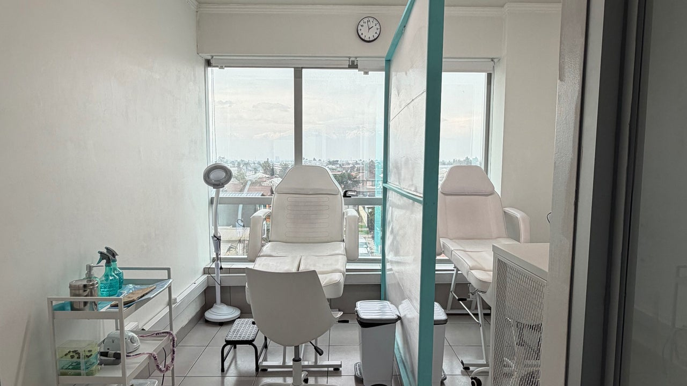
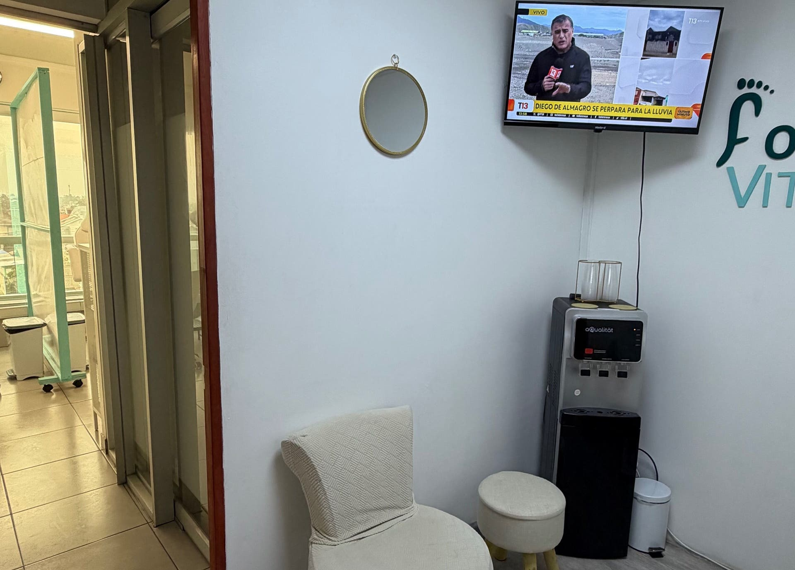
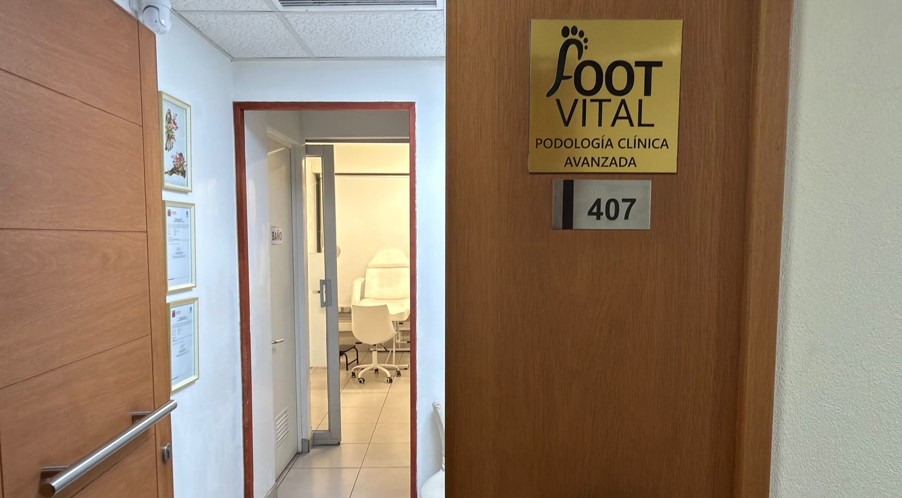

Técnicas avanzadas en ortonixia y tratamientos para hongos, durezas y cambios estructurales, en una consulta limpia y cómoda.
Llamar para reservar
Precios “desde”, según la valoración de cada caso.


Ambiente apto para niños, cerca del transporte público y con compromiso con el medio ambiente. Confirmación instantánea de la reserva.
Av. Los Pajaritos 3195, piso 4, oficina 407
Maipú, Santiago